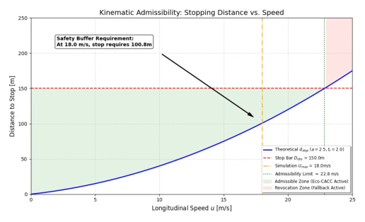
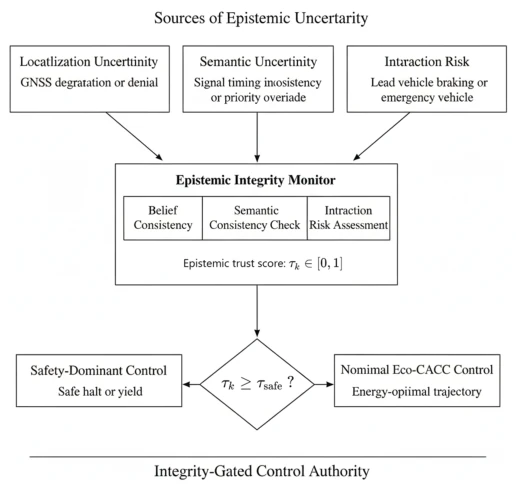
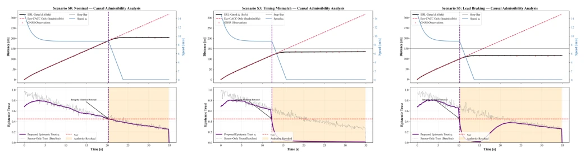

This paper adds an 'integrity checker' to Eco-CACC. The authors cleverly point out that many autonomous driving accidents are not due to sensor failures, but because the vehicle 'thinks' the world is as it wishes (semantic inconsistency). They developed an ERL layer to calculate a trust score; if the score is low, it brakes directly to save lives, rather than forcing the calculation of optimal energy consumption. This approach is much more practical than those stubbornly pursuing robust control, after all, a car cannot crash into a light to save fuel. However, this thing currently only runs in simulation, and only handles longitudinal control; lateral lane changing? No chance. The threshold is set quite conservatively (0.45), estimated to be for safety even if it means false positives. The theoretical derivation is quite elegant, linking the trust score to the stopping distance. In short, it's a good safety net, but still far from real-vehicle deployment; do not expect it to solve all 'cognitive dissonance.' For algorithms pursuing extreme efficiency, this layer of 'brake pads' might seem not aggressive enough, but in the face of safety, being conservative is always correct.
Existing Eco-CACC systems are too naive, assuming their internal world models are always correct [3], [4]. However, at traffic light intersections, GNSS signals may be lost, and V2I information may have semantic conflicts; persisting with optimal energy calculation at this point is fatal. Recent studies have mentioned that V2I unreliability requires conservative strategies [5]-[7], but most still treat uncertainty as estimation error, failing to touch the essence of 'cognitive failure.' The authors of this paper keenly point out that many accidents originate from inconsistencies at the semantic and policy levels, rather than simple sensor noise [8], [9]. Existing robust control or safety filtering cannot solve the problem of 'assumption premise collapse'; for example, when GNSS is unreliable, optimization itself should not proceed. Therefore, an Epistemic Resilience Layer (ERL) needs to be introduced to judge whether optimization is 'legal' at the decision layer, rather than blindly pursuing performance.
The overall architecture is shown in Fig. 2 (original Fig 1), with the core being the Epistemic Resilience Layer (ERL). It does not modify the underlying control law, but adds a 'gatekeeper.' First, the Integrity Monitor calculates the trust score $\tau_k$ in real-time, integrating position deviation (GNSS/LiDAR vs. dead reckoning), observability loss (signal loss), and semantic conflict (traffic light state inconsistency). This score is not calculated arbitrarily, but based on a theoretical guarantee: the trust score must be high enough to ensure the vehicle can brake in an emergency. The paper derives the Admissibility Theorem (Formula 6), mapping the trust score to the spatial uncertainty boundary $E(\tau_k)$, ensuring the remaining distance is greater than the stopping distance plus uncertainty. If $\tau_k$ falls below the threshold $\tau_{safe}$ (set to 0.45 in the text), control is revoked, switching to a safety-dominated fallback mode ($a_{safe}$). This effectively decouples 'whether fuel can be saved' and 'whether it can stop', allowing energy consumption optimization only when the world model is credible. Additionally, the method defines conservative thresholds to ensure that permissions are revoked first rather than risking optimization attempts when uncertainty increases, thereby guaranteeing safety boundaries at the physical level.

Fig. 2. Kinematic admissibility region induced by the stopping distance constraint. Shaded green denotes conditions where fallback braking ensures a stop prior to obstacle Dobs, providing the geometric basis for the epistemic threshold.

Fig. 1. Architecture of the proposed ERL framework. An Epistemic Integrity Monitor aggregates multi-source inconsistencies into a scalar trust score τk, which gates control authority between nominal eco-driving and safety- dominant fallback modes.
Experiments were conducted in simulation, covering 7 scenarios, including normal, GNSS noise, signal timing mismatch, lead vehicle emergency braking, etc. Metrics include trigger time, safety margin, and energy consumption. Results are interesting: under pure noise scenarios (S1-S2), the system did not trigger false alarms, continued running Eco-CACC, preserving efficiency; but under semantic conflict (S3) or interaction risk (S5), the trust score plummeted, triggering safety braking early, although energy consumption dropped, safety margin (Clearance) was ensured (increased). Fig. 3 displays trajectories and trust evolution; in failure modes, trust score collapse precedes physical collision risk. This indicates ERL can indeed distinguish 'sensor jitter' from 'world model error.' However, currently only validated on longitudinal control, lateral not tested, and simulation environment is relatively idealized.

Fig. 3. Trajectory (top) and trust evolution (bottom). In (a), trust remains admissible throughout the maneuver. In (b) and (c), semantic inconsistency and interaction risk trigger trust collapse, revoking authority for a safety-dominant halt.